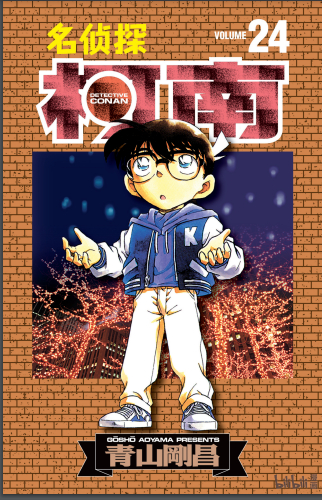
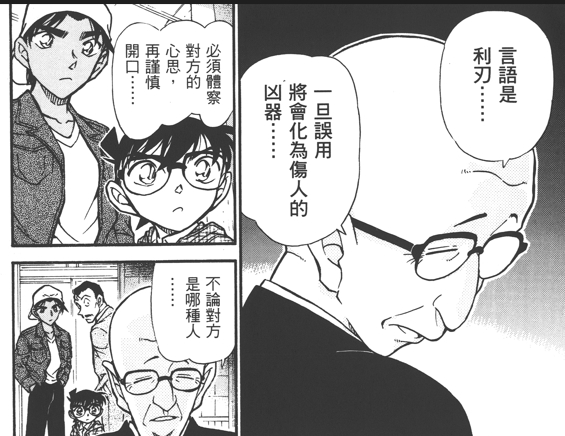

作者青山刚昌在三十年的连载中对人物和情节埋下了很多扑克牌相关的伏笔，由此诞生了“扑克牌论”。
第五十四张牌是一套牌的结束，也是“大王”这张最有分量的牌。
这次就开贴分析一下第五十四卷漫画里一些我观察到的、值得拿出来分享的地方。
先说结论：我认为这一卷在故事的组织上既是对之前的故事进行了一个里程碑式的总结，又故意留下了一些关于柯哀情节的暗示。
当然，也都是个人主观判断，目的是给各位同好做一个分享，抛砖引玉，打开思路。我从来也没有说这些分析一定就是作者本意，请某些吧友不要过于较真。
第五十四张牌是一套牌的结束，也是“大王”这张最有分量的牌。
这次就开贴分析一下第五十四卷漫画里一些我观察到的、值得拿出来分享的地方。
先说结论：我认为这一卷在故事的组织上既是对之前的故事进行了一个里程碑式的总结，又故意留下了一些关于柯哀情节的暗示。
当然，也都是个人主观判断，目的是给各位同好做一个分享，抛砖引玉，打开思路。我从来也没有说这些分析一定就是作者本意，请某些吧友不要过于较真。
一上来的故事是承接第五十三卷的两话主线。
FILE 1 出现了遇险的小男孩。
FILE 1 出现了遇险的小男孩。
file2 叫梦中之星。夢見るスター
故事中，女受害人喜欢观星。
在最后，罪魁祸首，扑克牌“大王”琴酒短暂露面。
不得不感慨一下，当年手绘的画风真是漂亮啊！
在最后，罪魁祸首，扑克牌“大王”琴酒短暂露面。
不得不感慨一下，当年手绘的画风真是漂亮啊！
FILE3 侦探团的雪人
博士带四个孩子上山滑雪，巧遇暴风雪中的砂仁案（而且是情沙）。
值得注意的是，这一话作者画柯南抓住在暴风雪中无助哭泣的步美，很像若干年后画的伦敦篇名场面。 步美这里戴的是这样的帽子，挡住一边，很像小兰的角。 作者这里是忍不住要把之后精心设计的情节提前画出来，留下小彩蛋吗？
作者这里是忍不住要把之后精心设计的情节提前画出来，留下小彩蛋吗？
博士带四个孩子上山滑雪，巧遇暴风雪中的砂仁案（而且是情沙）。
值得注意的是，这一话作者画柯南抓住在暴风雪中无助哭泣的步美，很像若干年后画的伦敦篇名场面。 步美这里戴的是这样的帽子，挡住一边，很像小兰的角。
2024-06-30 06:29 | 我就是会长HHDX:我觉得楼主找到了很好的切入点，鲜明的“角”的形象，相当大可能就是毛利兰的指代2024-06-30 12:41 | 贴吧用户_JQ66C9C:画的有些刻意了2024-06-30 13:08 | 猫之又😈:6662024-06-30 19:57 | 山河氤氲:注意到一件事：柯南在一般非紧急救人的情况下会抓住对方的手肘，而不是抓手腕，更不是握着对方的手，然而他对小哀好像不是这个样子的，刚认识没多久就在看足球比赛的时候拉人家手了2024-06-30 19:58 | 山河氤氲:回复 山河氤氲 :没记错的话，柯南但凡碰到小哀，都喜欢抓小哀手腕或直接握着手2024-07-01 08:30 | 贴吧用户_0bDS2EM:有什么好哭的2024-07-06 00:33 | ☞坚硬如水☜:回复 我就是会长HHDX :2024-07-10 21:36 | ☞坚硬如水☜:回复 山河氤氲 :是的2024-07-19 04:29 | ☞坚硬如水☜:回复 贴吧用户_0bDS2EM :步美是六岁小女孩呀2024-08-27 01:52 | ☞坚硬如水☜:回复 贴吧用户_JQ66C9C :2024-08-27 03:49 | 贴吧用户_5436aVb:步美又上分了


file 4.
“雪”中，“帽子”飞了。
“雪”中，“帽子”飞了。
2024-07-03 11:41 | 内的裤_:妙啊2024-07-13 02:06 | ☞坚硬如水☜:回复 内的裤_ :2024-07-27 05:32 | 有星星的新一:这么细？!2024-07-27 13:37 | 婧er倪:这里有点没get到。谁帮忙解释下2024-08-05 05:08 | ☞坚硬如水☜:回复 婧er倪 :在吧里搜一下帽子。很长的论证 很多人都提过
file 5 事件解决篇。
这一话有意思的点很多。
首先是封面这里，柯南倚着雪人，若有所思。
大家可以注意一下，一般三话小系列里，第三话解决篇封面的柯南，要么是一脸探知真相的决胜表情（如图中上一话结尾），要么就是一脸严肃，很少有这种淡然，甚至是怅然若失的表情。
这一话有意思的点很多。
首先是封面这里，柯南倚着雪人，若有所思。
大家可以注意一下，一般三话小系列里，第三话解决篇封面的柯南，要么是一脸探知真相的决胜表情（如图中上一话结尾），要么就是一脸严肃，很少有这种淡然，甚至是怅然若失的表情。
剧情中小哀也因为化学专精，秒懂柯南的提示，说出了破案的关键在于盐。
而结尾，和“盐”有关的关键词是“误用”——误会。
这个一定要注意，因为后面还会出现。
这个一定要注意，因为后面还会出现。
还有，柯南在故事最后和封面一样露出了若有所思怅然若失的表情。
这和他在破案时果断、得意的道破真相的神态完全不符。 一般只有在案件对柯南触动相当大的时候，才会在破案后继续沉浸其中，并以画外音的形式表现出遗憾和惋惜。
一般只有在案件对柯南触动相当大的时候，才会在破案后继续沉浸其中，并以画外音的形式表现出遗憾和惋惜。
而这个案子不但本身就没有这么大的感染力，而且在漫画剧情中也没有看到主人公任何的情绪代入，只是非常普通的一个日常而已。
那么，这里青山安排柯南以这样一个表情处于雪中，是为了什么？
这和他在破案时果断、得意的道破真相的神态完全不符。
而这个案子不但本身就没有这么大的感染力，而且在漫画剧情中也没有看到主人公任何的情绪代入，只是非常普通的一个日常而已。
那么，这里青山安排柯南以这样一个表情处于雪中，是为了什么？
第五十四卷打开后专门为单行本画的新一柯南“小剧场”再现了这个画面和情绪。
依然是柯南看到雪，若有所思，似乎想起了什么，可是又不是那么容易想到……

和第二十四卷，小哀第一次变大遇险的封面几乎一样。而且，这张画完全可以和第87卷，新兰幼儿园初遇那一卷的几张图结合起来看。
无论从构图还是表达的内容都如出一辙。
高中生一脸轻松愉快，而儿童的脸上出现的都是完全相反的表情，甚至可以说是负面表情居多。
这是不是作者为之后的幼儿园篇留下的小预演呢？
在雪天遇到小志保，但是暂时遗忘了，在樱花盛开的春天遇到小兰，误以为对方喜欢自己，自己也开始试着喜欢对方。
高中生一脸轻松愉快，而儿童的脸上出现的都是完全相反的表情，甚至可以说是负面表情居多。
这是不是作者为之后的幼儿园篇留下的小预演呢？
在雪天遇到小志保，但是暂时遗忘了，在樱花盛开的春天遇到小兰，误以为对方喜欢自己，自己也开始试着喜欢对方。
2024-06-30 05:52 | 贴吧用户_aGDtC16:记忆错位2024-07-27 05:35 | 有星星的新一:错位论越来越清晰了
说到樱花，好巧不巧，下一话file 6 吃人的房间 就是樱花盛开的春天！
而上一个案子剧中人物明确说出当时的时间点是大学寒假。
而日本大学寒假是十二月中下旬到一月上旬这个时间，樱花盛开漫天飞舞至少要三月底四月初。
中间隔了几乎三个月的时间！
作者故意把大雪和樱花连在一起，这是故意的吗？
中间隔了几乎三个月的时间！
作者故意把大雪和樱花连在一起，这是故意的吗？
柯南抓步美那个构图哈哈哈哈
为什么我突然想起这个图了
2024-06-30 12:14 | 顽皮鬼才:正常情况下，新/柯不会把弟媳认错。
file 6 封面，春天的蒲公英
个人相当喜欢这一张，隔着屏幕都能感觉出和煦的春风和如天空般晴朗的心情。
如此大量的蒲公英，也许是作者单纯觉得好看而画上的没有多想。
不过硬要分析的话，蒲公英的话语是： 不同颜色的蒲公英花语不同。
黄花：爱的神谕，真实的爱。
白花：找到我
橙色：眼力
蒲公英棉花：别离
你可以认为柯哀是真实的爱，暂时别离，最后找到彼此。
当然，这个画面是出现在代表新兰的樱花这一话的，也可以说新兰是真实的爱，因为黑衣组织暂时分开，最后找到彼此。
从画面上看不出花的颜色，也不好太牵强地分析，这里就提供一个思路。
如此大量的蒲公英，也许是作者单纯觉得好看而画上的没有多想。
不过硬要分析的话，蒲公英的话语是： 不同颜色的蒲公英花语不同。
黄花：爱的神谕，真实的爱。
白花：找到我
橙色：眼力
蒲公英棉花：别离
你可以认为柯哀是真实的爱，暂时别离，最后找到彼此。
当然，这个画面是出现在代表新兰的樱花这一话的，也可以说新兰是真实的爱，因为黑衣组织暂时分开，最后找到彼此。
从画面上看不出花的颜色，也不好太牵强地分析，这里就提供一个思路。
一上来柯南被少女可爱的神情和撅起的嘴唇吸引。
这里作者再次点出一个事实，新一对兰的感情，是少年人之间以ROU体和XING为基础的吸引。
我们可以想一想，新兰之间在故事里给读者展现的，除了胸部、臀部、走光、洗澡、拥抱等等，完全没有任何深层次的、灵魂上的交流，二人几乎没有任何共同语言。
小兰也经常把话题引入X杯、内衣扣子等主题。
小兰对新一的价值，目前大概就是XING吧……
这里作者再次点出一个事实，新一对兰的感情，是少年人之间以ROU体和XING为基础的吸引。
我们可以想一想，新兰之间在故事里给读者展现的，除了胸部、臀部、走光、洗澡、拥抱等等，完全没有任何深层次的、灵魂上的交流，二人几乎没有任何共同语言。
小兰也经常把话题引入X杯、内衣扣子等主题。
小兰对新一的价值，目前大概就是XING吧……
2024-06-30 04:34 | 好梦Golden:比起外表，名侦探更注重味道
新案子发生在寺庙里
寺庙，住持，老少一群和尚，樱花。
你想到了什么？
那就是雾天狗案！ 个人觉得在第54卷这个扑克牌中里程碑式的一个数字里，作者特意致敬自己多年前的案子。
因为，作者当年画不下去了，本来想在雾天狗案之后强行完结。
你想到了什么？
那就是雾天狗案！ 个人觉得在第54卷这个扑克牌中里程碑式的一个数字里，作者特意致敬自己多年前的案子。
因为，作者当年画不下去了，本来想在雾天狗案之后强行完结。
2024-07-01 11:00 | ☞坚硬如水☜:补充一下，旧案子第一话叫修行室，新案子第一话叫吃人的房间，都是房间。而且樱花季节背景的新案子用的是视觉错觉的诡计。2024-07-04 21:15 | ☞坚硬如水☜:新老案子都是和房间有关，而且新案子利用了“错觉”，视觉错位。
眼镜。
而且还是一叶障目 18年前的母亲多年后认不出自己的孩子。 和上一个案子一样，最后再次出现关键词“误用”——误会。错误。
而且还是一叶障目 18年前的母亲多年后认不出自己的孩子。 和上一个案子一样，最后再次出现关键词“误用”——误会。错误。

到现在为止，柯哀初遇相关的关键字已经齐备：
遇险的孩子、星星、雪、樱花、帽子、误认、错过。
究竟是巧合还是作者有意留下的密码呢？
遇险的孩子、星星、雪、樱花、帽子、误认、错过。
究竟是巧合还是作者有意留下的密码呢？
赶上直播
第54卷最后，作者也拿出了硬菜。
情节编排上是优秀的本格推理侦探甲子园。
人物上设计了超级有魅力的越水七槻。 她也出现在了本卷封底的钥匙孔里。
她也出现在了本卷封底的钥匙孔里。
因为她在剧情中计划要把连同柯南和平次在内的所有侦探全部沙四，所以如此丧心病狂的她作为代表扑克牌最后一张“大王”是完全够格的。
情节编排上是优秀的本格推理侦探甲子园。
人物上设计了超级有魅力的越水七槻。
因为她在剧情中计划要把连同柯南和平次在内的所有侦探全部沙四，所以如此丧心病狂的她作为代表扑克牌最后一张“大王”是完全够格的。
这样一来，代表第五十三卷，扑克牌第五十三张“小王”的东尾玛利亚
又是何方神圣呢？ 黑方？乌丸莲耶的孙女辈？
或者是小哀的妈妈宫野艾莲娜吃药变小逃过火灾？
又是何方神圣呢？ 黑方？乌丸莲耶的孙女辈？
或者是小哀的妈妈宫野艾莲娜吃药变小逃过火灾？
2024-06-30 13:14 | 反新兰吧:73说了宫野夫妇真的没了。
本卷的侦探图鉴也很契合主题，甚至是作者为了这一卷特意留到了现在。
一个是这个侦探的名字和江户川柯南一样也是由名人组合而成。
一个是推荐的作品十角馆事件，也和本卷“侦探甲子园”一样，是侦探（推理爱好者）集合在一处，一个接一个死去，凶手暗藏其中，甚至主人公都有生命危险的本格推理故事。
好玩的是，本卷雪山案的凶手，还有本卷甲子园案的北部侦探代表，在外型上都是在neta这个岛田洁。 当然，更不用说时津润哉ときつじゅんや这个名字就是绫辻行人 あやつじゆきと 的假名打乱后得出的。
一个是推荐的作品十角馆事件，也和本卷“侦探甲子园”一样，是侦探（推理爱好者）集合在一处，一个接一个死去，凶手暗藏其中，甚至主人公都有生命危险的本格推理故事。
好玩的是，本卷雪山案的凶手，还有本卷甲子园案的北部侦探代表，在外型上都是在neta这个岛田洁。 当然，更不用说时津润哉ときつじゅんや这个名字就是绫辻行人 あやつじゆきと 的假名打乱后得出的。
2024-06-30 06:08 | 雾琦冥幻:原来是绫辻行人的作品啊
好了 这一卷的分析就到此为止。
神中神！
下雨梗的分析提到黑方角色（包括实红or转红）首次以某个形态登场都会下雨
但是东尾首次也下雨……震惊🤯
但是东尾首次也下雨……震惊🤯


玛丽亚看文吧大佬@EdwardClow 分析说 她的剧情（寻找玛利亚）是哀酱剧情的浓缩 那这样的话都连起来了 青山太会了
d
d
d
d
好大的角角
哇好强
这个真挺可以
神了，刚圣
cy
2024-07-15 04:29 | ☞坚硬如水☜:谢谢支持
第1111话的灰原花坛纵火案并不只是致敬波西米亚丑闻那么简单，漫画标题是【零落的真相】，封面写着“与重要人物结缘的一块拼图”，也就是说该案是解开某个案件谜题的线索之一，结缘指的是若哀二人。前文提到了东尾玛丽亚是灰原的缩影（这个写作手法类似于晴为黛影），那么这个二人结缘系列就应该影射17年前的宫野夫妇实验室火灾案，青山真正意图是想告诉读者若狭和宫野夫妇实验室火灾案有着密不可分的关系。
86卷亲切的阿姨系列，首次揭晓朗姆是组织的二号人物，本系列的盗贼团犯人正是朗姆传言中的三个形象，本系列的小男孩无父无母，但他认识了一位亲切的阿姨，但事实上这个阿姨是盗贼团的一员，他不但将小男孩的双亲逼上了绝路，还葬送了小男孩好不容易交到的朋友。
我反复提过青山的写作手法是用若干看似独立的案件推理来形成一个宏观的主线/恋爱推理。
如果这个篇章也是这种情况呢？
那我们会得到这样一个答案：盗贼团映射的是黑衣组织，三个犯人映射朗姆，亲切的阿姨映射若狭，无父无母的小男孩映射灰原。若狭本来加入了黑衣组织，但她间接害死了宫野夫妇，她出于愧疚照顾年幼的灰原，但13年前没有成功阻止琴酒带走灰原，导致灰原失去了好不容易交到的好朋友——工藤新一。

86卷亲切的阿姨系列，首次揭晓朗姆是组织的二号人物，本系列的盗贼团犯人正是朗姆传言中的三个形象，本系列的小男孩无父无母，但他认识了一位亲切的阿姨，但事实上这个阿姨是盗贼团的一员，他不但将小男孩的双亲逼上了绝路，还葬送了小男孩好不容易交到的朋友。
我反复提过青山的写作手法是用若干看似独立的案件推理来形成一个宏观的主线/恋爱推理。
如果这个篇章也是这种情况呢？
那我们会得到这样一个答案：盗贼团映射的是黑衣组织，三个犯人映射朗姆，亲切的阿姨映射若狭，无父无母的小男孩映射灰原。若狭本来加入了黑衣组织，但她间接害死了宫野夫妇，她出于愧疚照顾年幼的灰原，但13年前没有成功阻止琴酒带走灰原，导致灰原失去了好不容易交到的好朋友——工藤新一。
2024-07-08 07:13 | ☞坚硬如水☜:赞